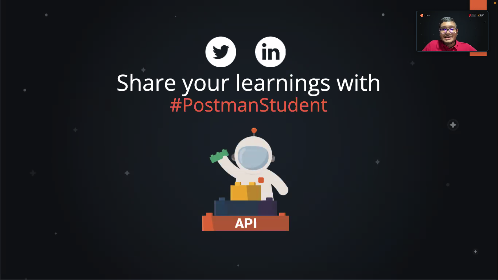
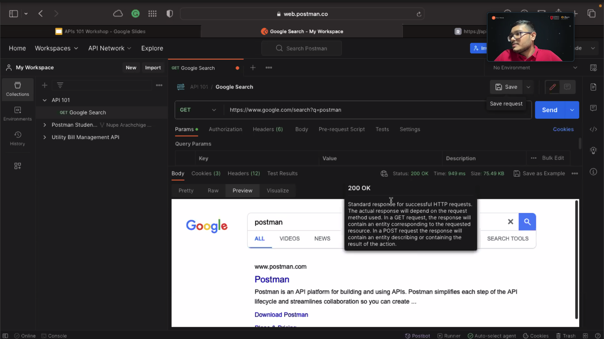
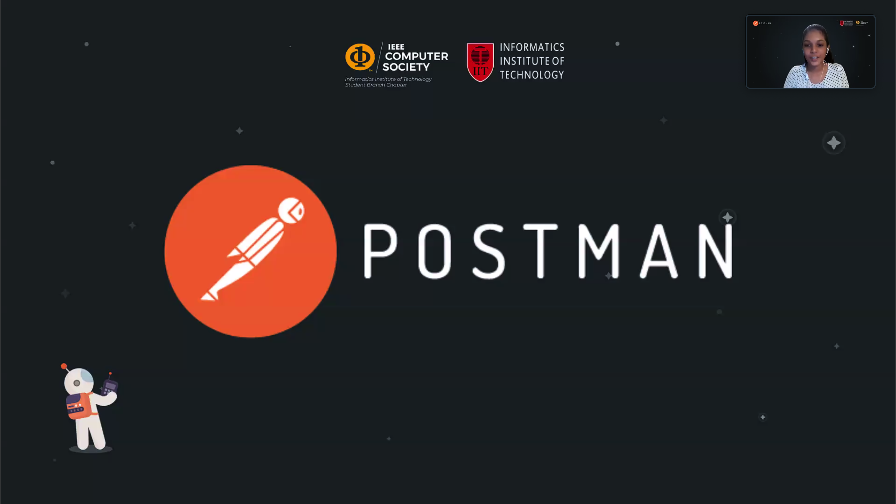
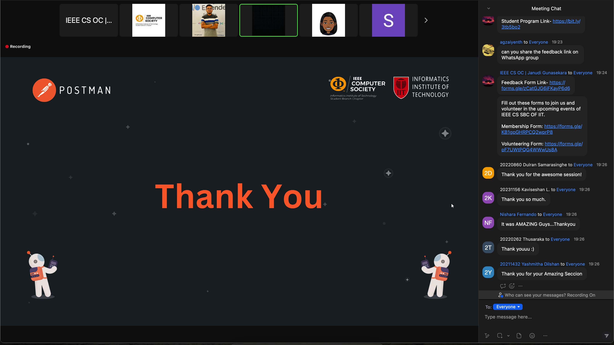

Postman API Workshops
About the event
Led by certified Postman Student Experts, these workshops organized by our chapter, offered a clear and practical introduction to Postman and API development. Centered around API development, these sessions offered hands-on, practical experience that helped participants understand how to build and test APIs effectively. With over 300 students taking part, the workshops served as a valuable stepping stone for students looking to strengthen their technical toolkit and advance in both academic projects and future tech careers.
year
2024




